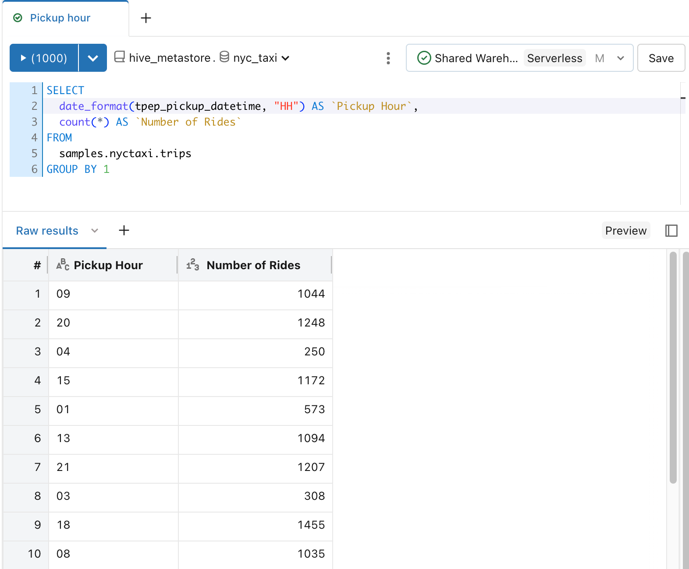
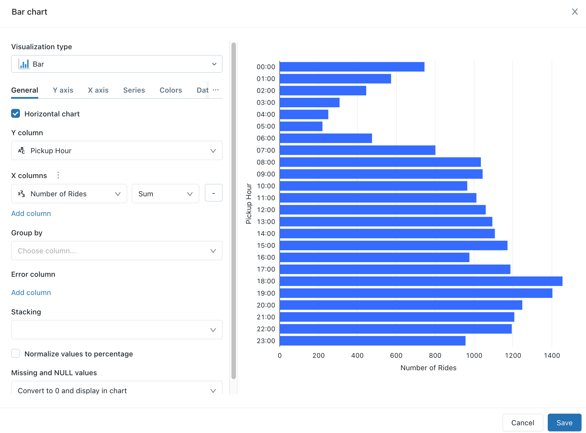
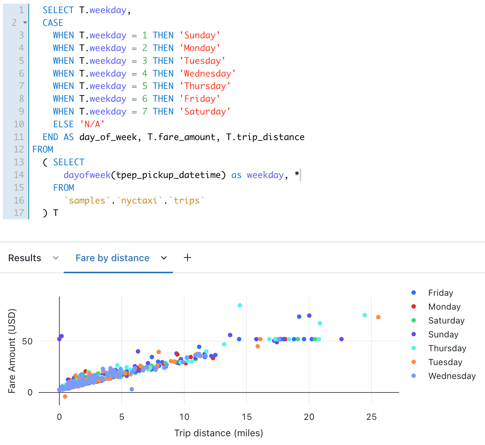
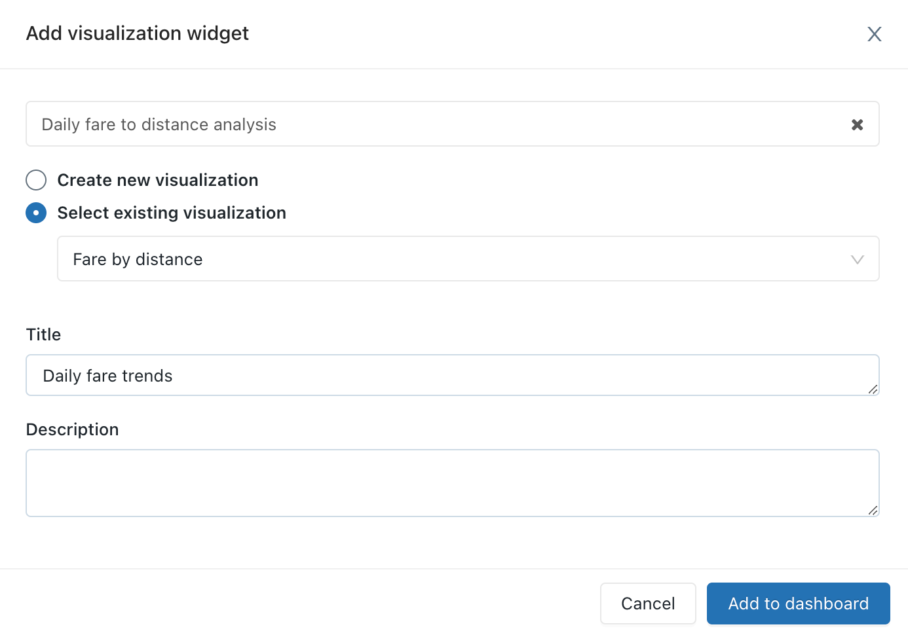
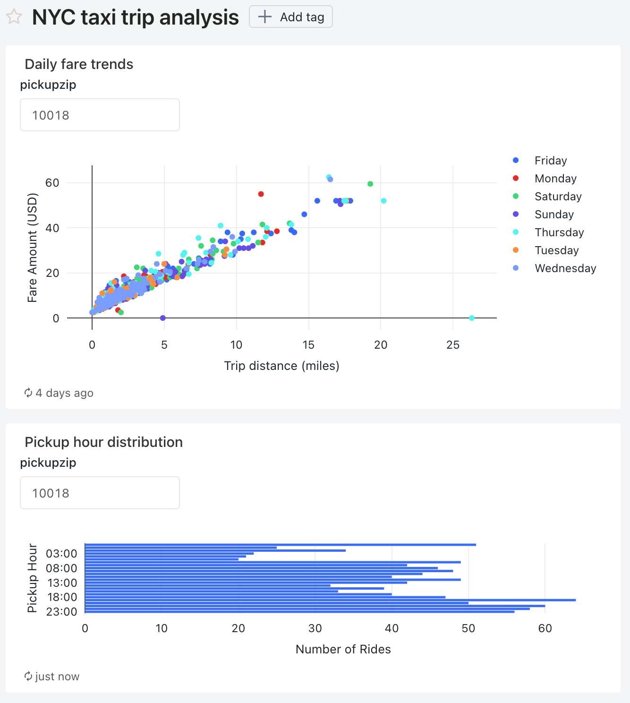
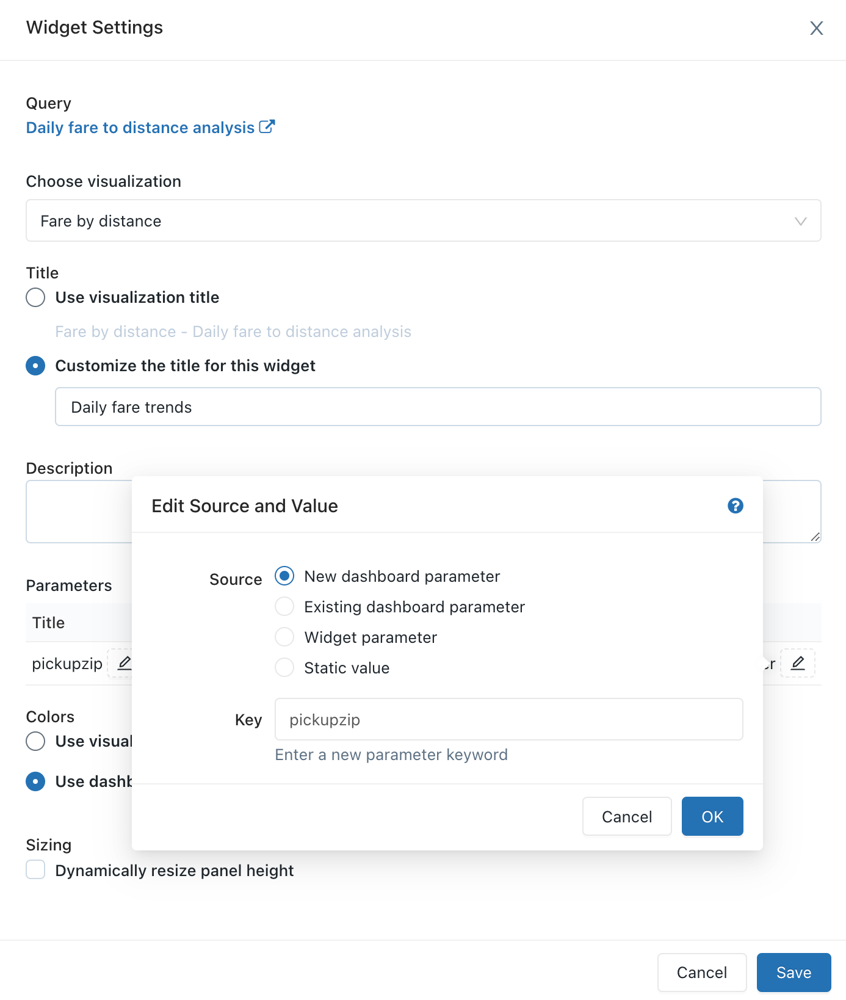
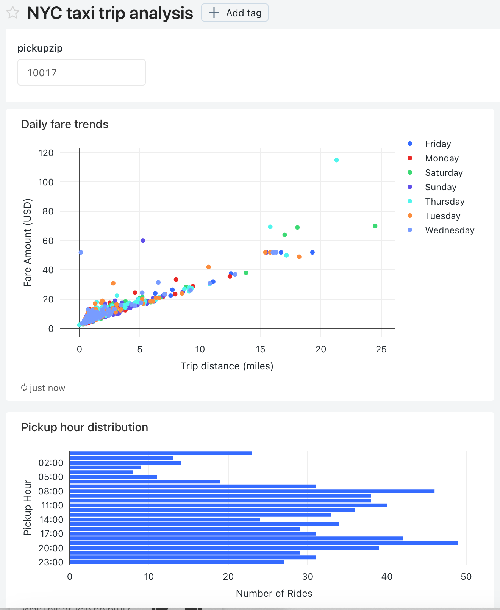

Visualize queries and create a dashboard in Databricks SQL
This tutorial uses the New York City taxi dataset in Samples. It shows you how to use SQL editor in Databricks SQL to create a visualization for each of several queries and then create a dashboard using these visualizations. It also shows you how to create a dashboard parameter for each of the visualizations in the dashboard.
Connect to Databricks SQL with SQL editor
Click
 New in the sidebar and select Query.
New in the sidebar and select Query.The SQL editor opens. If you do not have access to Databricks SQL, request access to from an admin.
Select a warehouse.
The first time you create a query the list of available SQL warehouses displays in alphabetical order. The next time you create a query, the last used warehouse is selected.
Click Serverless Starter Warehouse. This warehouse is created for you automatically to help you get started quickly. If serverless is not enabled for your workspace, choose Starter Warehouse. For information on creating SQL warehouses, see Configure SQL warehouses.
Query for pickup hour distribution
In SQL editor, paste the following query in the new query window to return the distribution of taxi pickups by hour.
SELECT date_format(tpep_pickup_datetime, "HH") AS `Pickup Hour`, count(*) AS `Number of Rides` FROM samples.nyctaxi.trips GROUP BY 1
Press Ctrl/Cmd + Enter or click Run (1000). After a few seconds, the query results are shown below the query in the results pane.
Limit 1000 is selected by default for all queries to ensure that the query returns at most 1000 rows. If a query is saved with the Limit 1000 setting, this setting applies to all executions of the query (including within dashboards). If you want to return all rows for this query, you can unselect LIMIT 1000 by clicking the Run (1000) drop-down. If you want to specify a different limit on the number of rows, you can add a
LIMITclause in your query with a value of your choice.The query result displays in the Results tab.
Click Save and save the query as
Pickup hour.
Create a visualization for the distribution of taxi pickups by hour.
Next to the Results tab, click + and then click Visualization.
The visualization editor displays.
In the Visualization Type drop-down, verify that Bar is selected.
Change the visualization name to
Bar chart.Verify that
Pickup Houris specified for the Y column drop down.Verify that
Number of RidesandSumare specified for the X column drop down.Click Save.
The saved chart displays in the SQL editor.
Query for daily fare trends
In SQL editor, click + and then click Create new query.
In the new query window, paste the following query to return the daily fare trends.
SELECT T.weekday, CASE WHEN T.weekday = 1 THEN 'Sunday' WHEN T.weekday = 2 THEN 'Monday' WHEN T.weekday = 3 THEN 'Tuesday' WHEN T.weekday = 4 THEN 'Wednesday' WHEN T.weekday = 5 THEN 'Thursday' WHEN T.weekday = 6 THEN 'Friday' WHEN T.weekday = 7 THEN 'Saturday' ELSE 'N/A' END AS day_of_week, T.fare_amount, T.trip_distance FROM ( SELECT dayofweek(tpep_pickup_datetime) as weekday, * FROM `samples`.`nyctaxi`.`trips` ) T
Click Save and save the query as
Daily fare to distance analysis.
Create a visualization for daily fare trends
Next to the Results tab, click + and then click Visualization.
The visualization editor displays.
In the Visualization Type drop-down, select Scatter.
Change the visualization name to
Fare by distance.On the General tab, set the value for the X column to
trip_distanceand set the value for the Y columns tofare_amount.In the Group by drop-down, set the value to
day_of_week.On the X axis tab, set the Name value to
Trip distance (miles).On the Y axis tab, set the Name value to
Fare Amount (USD).Click Save
The saved chart displays in the SQL editor.

Create a dashboard using these visualizations
Click
New in the sidebar and select Dashboard.Set the dashboard name to
NYC taxi trip analysis.Click Save.
In the Choose warehouse drop-down list, select Serverless Starter Warehouse. If serverless is not enabled for your workspace, choose Starter Warehouse.
In the Add drop-down list, click Visualization.
In the Add visualization widget window, select the Daily fare to distance analysis query.
In the Select existing visualization list, select Fare by distance.
In the Title text box, enter
Daily fare trends.Click Add to Dashboard.
The Daily fare trends visualization appears on the dashbard design surface.
In the Add drop-down list to add a second widget to the dashboard, and then click Visualization.
In the Add visualization widget window, select the Pickup hour query.
In the Select existing visualization list, select Bar chart.
In the Title text box, enter
Pickup hour distribution.Click Add to Dashboard.
Resize this visualization to match the width of the first visualization in the dashboard.
Click Done Editing.

Add a pickup zip code parameter to each query
In SQL editor, open the Daily fare to distance analysis query.
Add the following
WHEREclause to the Daily fare to distance analysis query to filter the query by pickup zip code.WHERE pickup_zip IN ({{ pickupzip }})
In the pickupzip text box, enter
10018and then click Apply changes to execute the query with the pickup zip code parameter.Click Save.
Open the Pickup hour query.
Add the following
WHEREclause to the Pickup hour query to filter the query by the pickup zip code. Add this clause before theGROUP BYclause.WHERE pickup_zip IN ({{ pickupzip }})
In the pickupzip text box, enter
10018and then click Apply changes to execute the query with the pickup zip code filter.Click Save.
Update the dashboard to use a dashboard parameter
Open the NYC taxi trip analysis dashboard.
Each of the visualizations now includes a parameter for the pickup zip code.
Click the kebab menu
 for this dashboard and then click Edit.
for this dashboard and then click Edit.Click the kebab menu
for Daily fare trends visualization and then click Change widget settings.In the Parameters section, click the pencil icon
 for the Widget parameter in the Value field.
for the Widget parameter in the Value field.In the Edit source and Value window, change the Source to New dashboard parameter.
Click OK and then click Save.
The pickupzip dashboard parameter appears and the widget parameter for the Daily fare trends visualization no longer appears.
Click the kebab menu
for Pickup hour distribution visualization and then click Change widget settings.
In the Parameters section, click the pencil icon
for the Widget parameter in the Value field.In the Edit source and Value window, change the Source to Existing dashboard parameter.
Verify that pickupzip is selected as the Key value.
Click OK and then click Save.
The widget parameter for the Pickup hour distribution visualization no longer appears.
Click Done editing.
Change the value of the pickupzip dashboard parameter to
10017and then click Apply changes.The data in each of the vizualizations now displays the data for pickups in the 10017 zip code.
